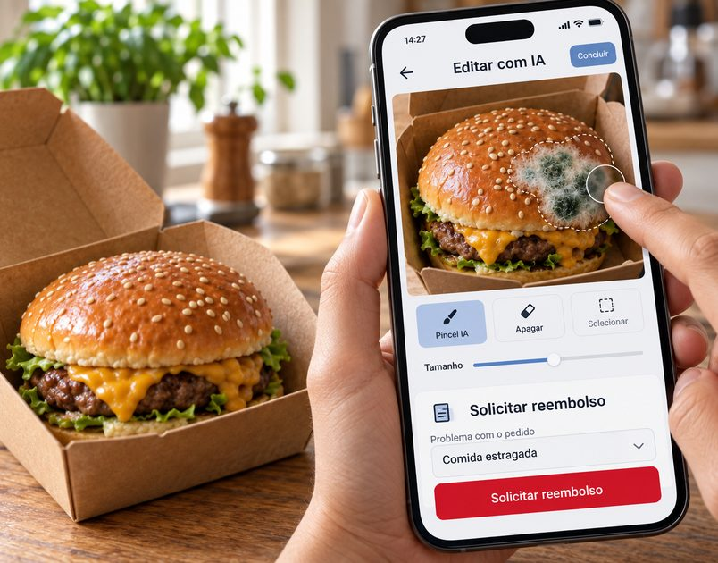
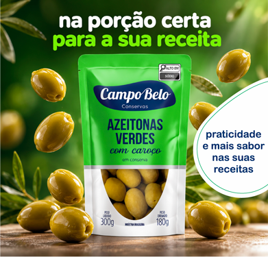
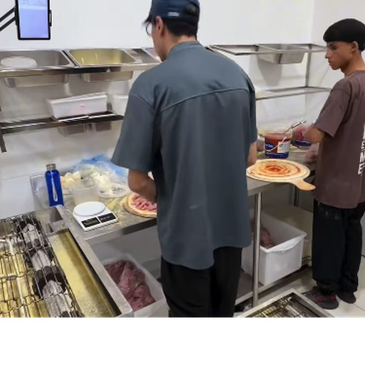
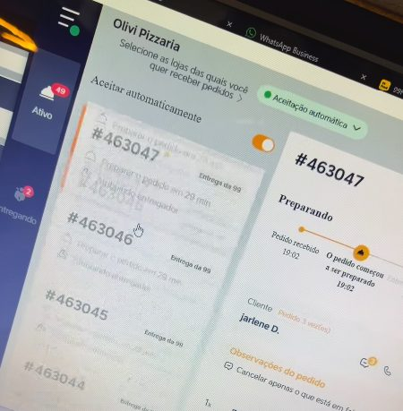
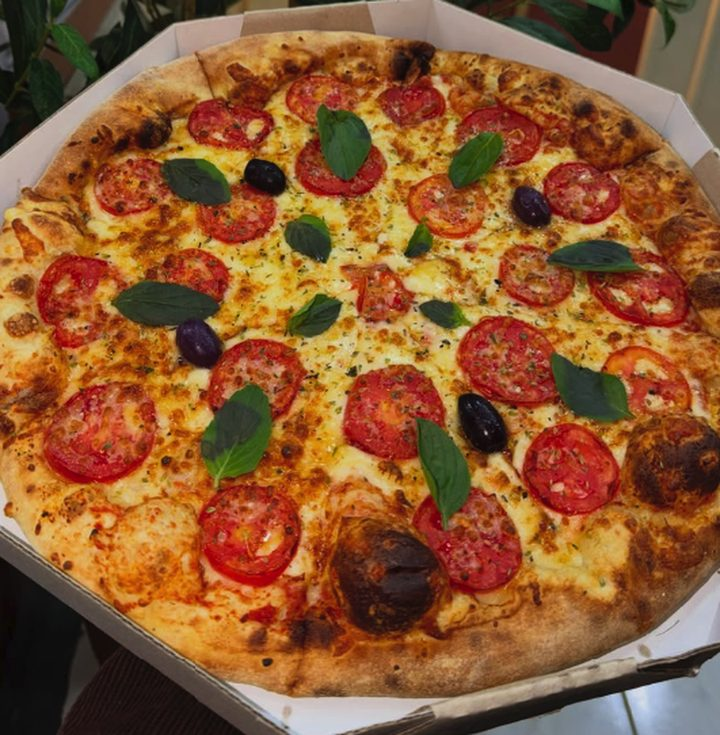
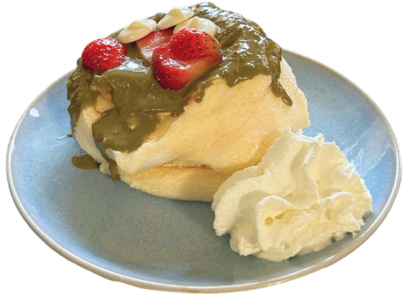

Golpes com IA no delivery
Reclamações com imagens manipuladas e má fé de clientes e entregadores são foco de preocupação por fraudes em pedidos.
#75 out . 26
Por: Bruna Cruz
Pedir comida por aplicativo e receber algo um pouco diferente, acontece. Nesses casos, o cliente pode reclamar na própria plataforma enviando uma foto e um relato para análise. Tudo isso costuma ser comum na gestão de inúmeros empreendimentos, porém com a popularização das ferramentas de inteligência artificial virou uma porta de entrada para um risco financeiro.
O desafio agora é agir rapidamente e analisar também se uma fotografia é verdadeira ou falsa. Isso porque, tem se popularizado fraudes nos pedidos por reembolso nas plataformas utilizando fotos falsas com comida estragada, mofada ou até entregue com bichos...

Como acontece a fraude
com imagem alterada:
Cliente faz pedido via plataforma
de delivery.
Podem ser pedidos grandes ou com valor alto fora do padrão comum das lojas.O pedido é entregue.
O consumidor recebe a comida e
verifica o produto.O cliente tira foto da comida e altera com Inteligência Artificial.
Não é preciso muito conhecimento nem aplicativos pagos.O cliente abre a reclamação sobre
a entrega.
Utilizando a foto manipulada como evidência para alegação de pedido errado, incompleto ou estragado.Análise da reclamação.
Plataformas podem cruzar a imagem com dados do pedido, histórico e outros sinais para identificar inconsistências. O estabelecimento é notificado.Resolução da reclamação.
De acordo com a análise da plataforma e retorno do restaurante, é feito o reembolso ou não do valor do pedido.

A imagem e contestação sozinhas não garante o reembolso
Após a reclamação, as plataformas podem usar várias ferramentas para análise. Segundo a Diretora de Customer Experience no iFood, Carolinne Vabo, as evidências visuais são cruzadas com informações sobre o pedido, o histórico do consumidor, da loja parceira e do entregador envolvido na ocorrência. Além disso, utilizam também agentes de IA para fazer essa análise.
O que diz o iFood
Ouvido pela nossa reportagem, o Ifood explica que utiliza algumas ferramentas de análise do pedido que também se utilizam de inteligência artificial.
Almir, agente de pós-entrega
Desenvolvido como especialista em decisões pós-entrega, avalia não apenas a imagem apresentada, mas também o histórico do cliente, da loja parceira e do entregador envolvido na ocorrência.
Evidências visuais.
Testes estão em andamento com modelos desenvolvidos para detectar possíveis manipulações, considerando o contexto específico do iFood. Eles combinam informações da imagem e da jornada do pedido para avaliar indícios de alteração.
Sancho, agente de comportamento.
O agente Sancho avalia sinais de fraude na conta do cliente que está solicitando o reembolso, e informações dos pedidos atrelados a este usuário.
Histórico do restaurante.
Análise do histórico de pedidos, avaliações, reclamações e informações.
“Quando identificamos reincidência comprovada, aplicamos medidas proporcionais que podem incluir restrições a reembolsos ou pagamentos e, conforme o caso, o bloqueio definitivo da conta, respeitando o direito à contestação. O objetivo é prevenir práticas fraudulentas e proteger a experiência de consumidores, lojas parceiras e entregadores.”
Carolinne Vabo,
Diretora de Customer Experience no iFood.
O que diz a 99Food
Procurada pela Revista Assaí Bons Negócios, a 99Food declara que realiza verificação de autenticidade antes da aprovação de qualquer reembolso.
A empresa também não recomenda o uso de imagens de IA nos cardápios e não autoriza fotos geradas ou manipuladas por IA em pedidos de reembolso.
Como o restaurante deve agir nesses casos?
Ir à casa do cliente pode gerar uma situação de confronto que envolve riscos. Mas o que o estabelecimento pode fazer para se proteger?
A Associação Brasileira de Bares e Restaurantes (Abrasel) reforça a importância de transformar procedimentos cotidianos em registros. Alguns cuidados podem ajudar a criar um histórico da operação:
- Fotografe o pedido pronto ou instale uma câmera de registro, especialmente antes de fechar a embalagem.
- Utilize lacres de segurança.
- Mantenha registros organizados das informações do pedido.
- Concentre a comunicação nos canais oficiais da plataforma.
- Responda rapidamente quando houver uma contestação.
- Guarde as evidências disponíveis para contextualizar o atendimento.
- Confira se a foto do cardápio corresponde ao produto entregue.
A ideia não é transformar a rotina do restaurante em uma operação burocrática de documentação mas criar registros que possam ser consultados caso surja uma divergência.
“Quem já tem câmeras nas áreas de produção e embalagem também pode usar as gravações como contraprova, já que elas mostram como o pedido saiu da cozinha”, explica Célio Salles, membro do conselho de administração da Abrasel.



A grande recomendação é: não dependa de uma única evidência. Em uma contestação, informações do pedido, comunicação com o cliente, registros da operação e evidências visuais podem ajudar a construir o contexto da ocorrência.
Seus direitos
Perante as plataformas
Se o empreendedor comprovar que o produto saiu do seu estabelecimento em perfeitas condições, a plataforma não pode reter o seu dinheiro. Ela assume a responsabilidade civil pelo gerenciamento das transações financeiras e pela segurança do ecossistema que ela mesma criou.
Além disso, de acordo com o Código de Defesa do Consumidor e o Código Civil (que regem os contratos de prestação de serviços entre empreendedor e os aplicativos), a plataforma comete uma prática abusiva ao aplicar estornos automáticos sem dar ao restaurante o direito à ampla defesa ou ferramentas viáveis de contestação imediata.
Caso o suporte do aplicativo se recuse a devolver o dinheiro de fraudes comprovadas, você pode acionar a Justiça (geralmente via Juizado Especial Cível, o JEC) para reaver o dinheiro dos pedidos e pedir indenização por danos materiais e, dependendo do impacto no seu fluxo de caixa, danos morais.
Perante os clientes
O cliente que adultera uma imagem por IA para obter uma vantagem econômica ilícita está cometendo um Crime de Estelionato. Essa conduta se enquadra no Artigo 171 do Código Penal e pode se enquadrar, mais especificamente, como Estelionato Digital (Art. 171, § 4º-B), cuja pena é ainda mais severa do que o estelionato comum: reclusão de 4 a 8 anos e multa.
Para providências legais, o empreendedor precisa registrar um B.O. (Boletim de Ocorrência) por estelionato digital que pode ser feito de forma online na Delegacia Virtual do seu estado ou em uma delegacia especializada em crimes cibernéticos.

A IA veio para atrapalhar?
Ainda é possível usar a IA de forma positiva.
A inteligência artificial já é usada por 38% dos estabelecimentos, segundo pesquisa da Abrasel de 2025. Além disso, os pequenos negócios já usam essas ferramentas para criar suas comunicações, cardápios e artes para redes sociais.
Mas aqui está um alerta: quanto mais a imagem promocional se distancia do produto que realmente chega à mesa do cliente, maior pode ser a frustração e a maior a chance de reclamações.
As plataformas ouvidas recomendam ainda que os restaurantes mantenham fotos reais e atualizadas no cardápio.
Caso os empreendedores utilizem inteligência artificial para aprimorá-las, é fundamental preservar as características do produto e sua correspondência com aquilo que será entregue.